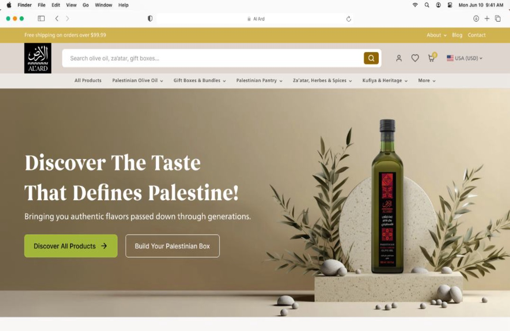
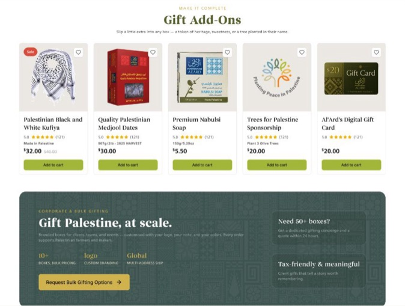
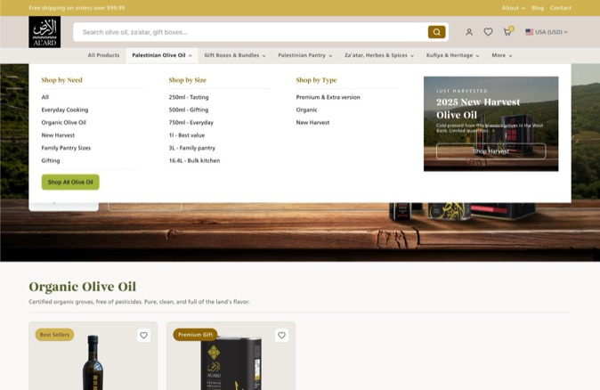

E-commerce · Conversion Redesign
AL'ARD Making a beautiful story easy to buy

Context
AL'ARD sells Palestinian olive oil and artisan foods — heritage products tied closely to Palestinian identity — across regional storefronts for the US, Europe, and Saudi Arabia.
Problem
AL'ARD's storefronts told a beautiful story but made buying hard: homepages cluttered with stacked pop-ups competing for attention, key navigation buried in a desktop side menu, and product pages where the image, price, and size options all sat below the fold. SEO audits across the three regional sites flagged structural issues as well. The brief: a conversion-focused redesign that makes shopping effortless on desktop and mobile — without diluting the brand's Palestinian heritage identity.
My Role
UX/UI designer responsible for the redesign across phases — homepage, product page, and a full collection and IA restructure spanning all three regional storefronts.
Key Decisions
- Restructured the catalog around how customers shop, not how inventory is stored: nine navigation collections — Palestinian Olive Oil, Gift Boxes, Pantry, Za'atar & Spices, Kufiya & Heritage, Nabulsi Soap, Support Palestinian Farmers, Customer Favorites — plus merchandising collections like Palestinian Breakfast Essentials, Gifts under $30, and New Harvest.
- Moved primary navigation out of the side menu into a sticky header with a mega menu, so every category was reachable in one click from any scroll position.
- Decluttered the homepage: minimized pop-ups, more products above the fold, and a "Compare the Gifts" module that guides buyers by budget and occasion — Mini, Pantry, Olive Oil, Premium.
- Rebuilt the product page around the fold — image, title, rating, price, and size variants all visible without scrolling — with per-unit pricing that makes the bulk discount self-evident, and prominent Halal and Harvest tags.
- Layered proven conversion patterns: Subscribe & Save, frequently-bought-together bundles, a collapsible FAQ, a reviews preview, related products, and persistent trust badges for authentic Palestinian origin and free-shipping thresholds.
- Designed a dedicated B2B path — a corporate and bulk-gifting section with custom branding and multi-address shipping.


Outcome
The site hasn't launched yet. I built an interactive prototype and tested it with users from the target segments; the sessions showed clear improvement over the old Salla experience — faster navigation, quicker product discovery, and less confusion around fit — validating the new structure before development.
Reflection
Replatforming off a template isn't just a redesign — it's reconciling priorities that don't naturally agree: the client's business goals, real usability for a wide and varied audience, SEO requirements, and what the dev team's stack could realistically support. Most of the work was making sure no single priority won at the expense of the others.